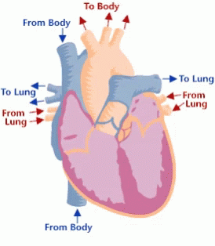

Heart
Examples:

Blood
Types of Blood Cells:
Examples:
note:Plasma (liquid part) carries nutrients and hormones
Blood Vessels
Arteries:
Carry oxygen-rich blood away from the heart
Veins:
Carry oxygen-poor blood back to the heart
Capillaries:
Tiny vessels for oxygen/nutrient exchange
Circulation
Pulmonary Circulation:
Steps:Heart → lungs → heart
CO₂ leaves blood → oxygen enters → blood returns to heart
Systemic Circulation
Steps:Heart → lungs → heart
Delivers oxygen/nutrients to tissues → collects waste (CO₂)
Coronary Circulation
Steps: Heart → heart
Supplies oxygen to the heart muscle itself
Double Loop Circulation
Definition: Blood travels in two loops – pulmonary and systemic
How it works:
1.Pulmonary loop → heart → lungs → heart (oxygenates blood)
2.Systemic loop → heart → body → heart (delivers oxygen)
Why it matters:
Keeps oxygenated and deoxygenated blood separate → efficient oxygen delivery